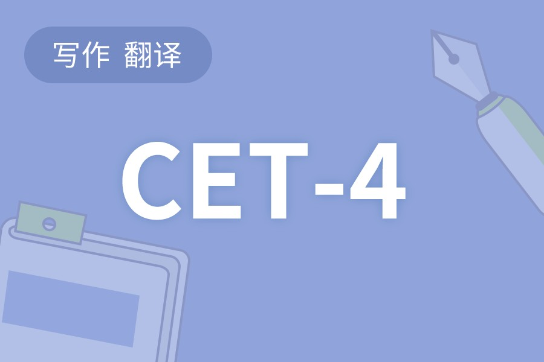
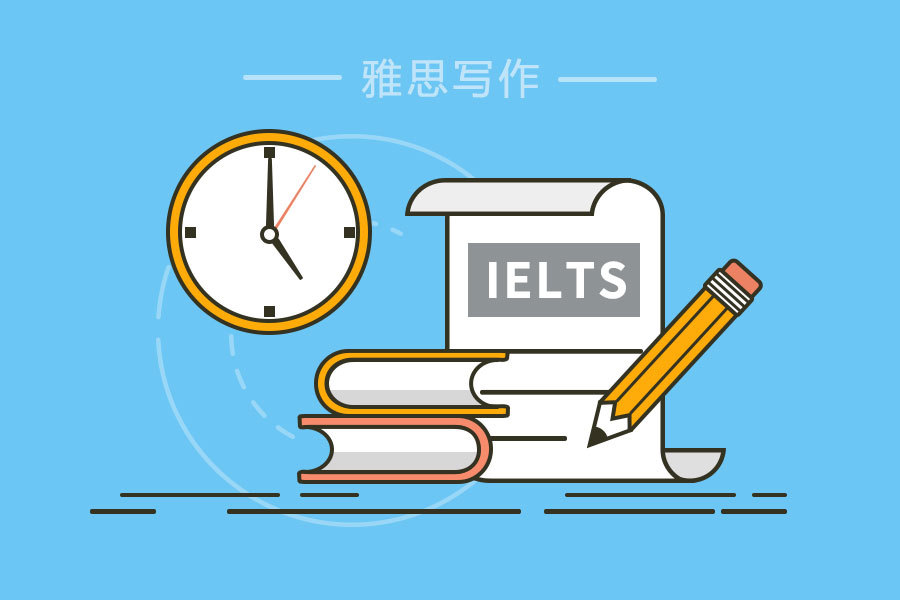
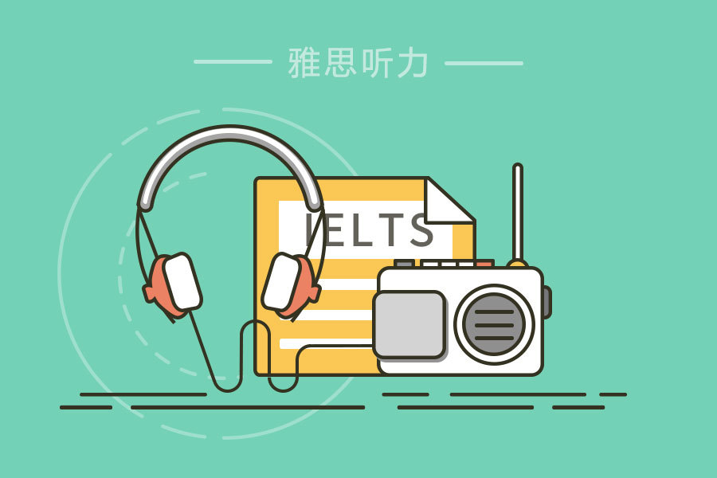

Toggle navigation
首页
单词
听力
口语
新闻
读书
炼句
课程
社区
帮助
Username
我的空间
我的打卡
我的班级
我的保险
短信
贝壳
设置
退出
扇贝课程
四级课程

四级临考课程
预计学时 :
2小时
有效期 :
1个月
考前必学！70%考生在这些语法易错点上扣分。花1个小时临考冲刺，讲解+练习+强化记忆，让你绕开这些“坑”。
¥ 29 购买
四级冲刺课程
预计学时 :
10小时
有效期 :
1个月
扇贝四级冲刺课程，带你了解改革后的四级听力阅读，掌握解题方法，“第一视角”还原实战解题步骤。
¥ 79 购买
口语练习
手绘图解音标课
预计学时 :
5小时
有效期 :
3个月
试听 >
只要5小时，23个微视频教你识记48个音标符号；精致的手绘音标图解教你快速定位唇齿舌位；精美的扇贝口语APP故事模式带你有针对性地反复练习。
¥ 49 购买
扇贝雅思课程
查看详情 >
雅思口语课程
试学 >
预计学时 :
24小时
有效期 :
5个月
讲解考试评分标准：发音、语法多样性及准确性、词汇多样性、流利性与连贯性，逐一分析雅思口语三个部分，搭建答题框架，丰富话题语言。
¥ 399 购买

雅思写作课程
试学 >
预计学时 :
33小时
有效期 :
5个月
讲解大小作文评分标准（写作任务完成／回应情况、连贯与衔接、词汇丰富程度、语法多样性及准确性），帮助考生搭建思路框架、积累语言素材。
¥ 399 购买
雅思阅读课程
试学 >
预计学时 :
24小时
有效期 :
5个月
提升雅思阅读三大核心能力：词汇、句法、信息定位。 了解四大题型，熟悉相应解题步骤方法，准确率与答题速度同步提高
¥ 399 购买

雅思听力课程
试学 >
预计学时 :
24小时
有效期 :
5个月
提升雅思听力三大核心能力：辨音、词汇、信息筛选。 了解四大题型，熟悉相应解题步骤。训练学习者答题既快又准，考试现场信心倍增。
¥ 399 购买